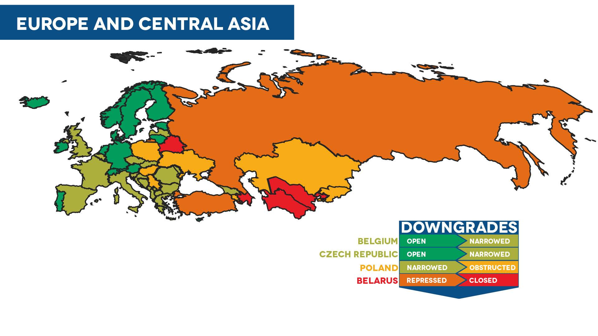
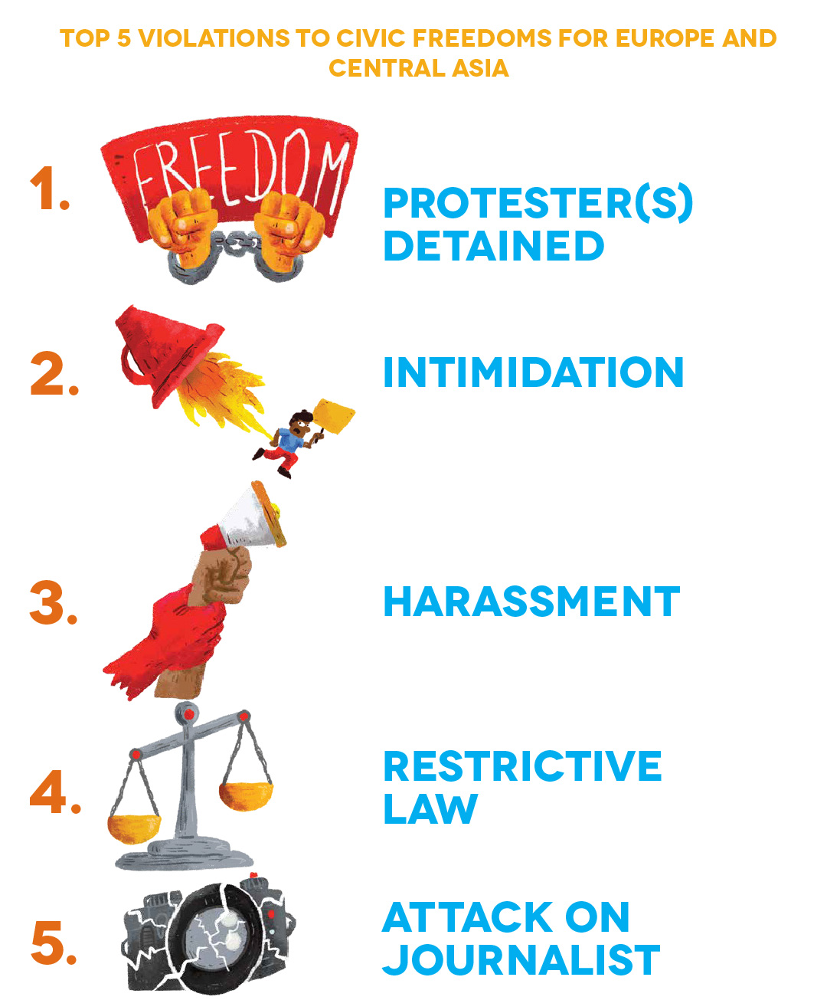

People Power Under Attack 2021 - Europe & Central Asia
Europe & Central Asia
Civic space in the Europe and Central Asia region continues to decline. Of the region’s 54 countries, civic space is rated as open in 19, narrowed in 21, obstructed in seven, repressed in three and closed in four. Over the past year, we have documented a notable decline in civic space in established democracies such as France and the UK, with legislative developments threatening fundamental freedoms. Civic space in other European countries is in decline, with the civic space rating of four countries being downgraded. In Central Asia, governments continue to restrict the already limited space for civil society, often deploying tactics of harassment and intimidation against journalists and HRDs. Additionally, increasingly authoritarian leadership was documented under a new president in Kyrgyzstan.
Ratings Overview
CIVICUS Monitor ratings reflect this picture. In the Europe and Central Asia region, our latest analysis shows that overall country ratings in the region have not improved. The four European countries where ratings have been downgraded are Belarus, Belgium, Czech Republic and Poland. Three of these countries are European Union (EU) member states.
The downgrading of Belgium’s civic space rating from open to narrowed is due to an ongoing crackdown on peaceful assembly. Illustrating this, three major protests against racial and class injustice between November 2020 and January 2021 were met with excessive police force, including the use of a semi-lethal weapon, with police also accused of using beatings, strangleholds and racist insults, and detaining hundreds of protesters, including minors. Police initially prohibited one of the protests before announcing that it would be ‘tolerated’, but then intimidated people who may have intended to participate in it. Additionally, police have used disproportionate force to enforce COVID-19 measures, particularly targeting excluded groups. There are also concerns about the rights of migrants, who staged a hunger strike for over 60 days calling for legal status after they were denied official documentation recognising their asylum seeker status. Many of the migrants who have lived in Belgium for years are facing an increasingly precarious situation, worsened by the pandemic.
In the Czech Republic, concerns over declining media independence have resulted in a ratings downgrade from open to narrowed. In May 2021, Czech President Milos Zeman's office announced that it would stop providing information to several investigative media outlets. Similarly, several international and Czech journalists were not allowed to attend a joint press conference held by then-Prime Minister Andrej Babiš and Hungarian Prime Minister Viktor Orbán. Additionally, there are concerns over political interference in the public broadcaster Česká televize (Czech Television) with the unexpected dismissal of the five members of its Advisory Board in November 2020 and an unsuccessful attempt in March 2021 to remove its CEO, who makes editorial decisions. The impartiality of Czech national radio has also come under threat, with pro-ruling party council members trying to influence broadcasts. Additionally, the acquisition of Central European Media Enterprises, which develops and produces content for 30 TV channels in five Central and Eastern European countries, by Czech billionaire Petr Kellner, who is known to have close ties with China, raises concerns of censorship.
 The systematic silencing of civil society in Belarus, following mass protests that broke out before and immediately after the disputed August 2020 presidential election, has resulted in a ratings downgrade from repressed to closed. In the past year, the authorities have raided, attacked, detained and charged hundreds of protesters and journalists, sentenced and jailed a former presidential candidate, disbanded CSOs and media outlets and amended laws to prevent citizens from organising and journalists from reporting respectively. As of 25 November 2021, 882 people were reported to be political prisoners in Belarus. Many of them have been detained and sentenced to terms of detention ranging from a few days to several years in prison, mostly for participating in anti-government protests. Additionally, the authorities have launched a process to liquidate dozens of CSOs, including key human rights groups, as President Alexander Lukashenko continues his unrelenting crackdown on civil society.
The systematic silencing of civil society in Belarus, following mass protests that broke out before and immediately after the disputed August 2020 presidential election, has resulted in a ratings downgrade from repressed to closed. In the past year, the authorities have raided, attacked, detained and charged hundreds of protesters and journalists, sentenced and jailed a former presidential candidate, disbanded CSOs and media outlets and amended laws to prevent citizens from organising and journalists from reporting respectively. As of 25 November 2021, 882 people were reported to be political prisoners in Belarus. Many of them have been detained and sentenced to terms of detention ranging from a few days to several years in prison, mostly for participating in anti-government protests. Additionally, the authorities have launched a process to liquidate dozens of CSOs, including key human rights groups, as President Alexander Lukashenko continues his unrelenting crackdown on civil society.
The continuous deterioration of civic space in Poland has led to the country’s rating being downgraded from narrowed to obstructed – see below.
Civic space in Central Asia continues to worsen. Government opponents, civil society activists, independent journalists, bloggers, HRDs, lawyers, peaceful protesters and others critical of governments have been persecuted through tactics ranging from orchestrated online attacks, anonymous threats and surveillance to arrest, prosecution and imprisonment on politically motivated charges. Governments have frequently limited the online dissemination and exchange of information, including through arbitrary blocking of websites critical of the government. Turkmenistan’s government, which continues to deny the existence of COVID-19 in the country, has stepped up its campaign against tools that circumvent internet restrictions, such as virtual private networks (VPNs), which people use to access otherwise inaccessible resources. New legislation initiated in several Central Asian countries, including Kazakhstan and Kyrgyzstan, imposes further restrictions aimed at censoring critical online content.
Civic Space Restrictions
 In the Europe and Central Asia region, the freedoms of peaceful assembly and expression are under threat. The most common violations documented during the reporting period include the detention of protesters, the intimidation and harassment of journalists and HRDs, the passing of restrictive laws and physical attacks on journalists.
Detention of protesters
In 2021, the detention of protesters was the most common civic space violation, documented in at least 36 countries. Coupled with this, the authorities have also responded to protests with excessive force. Environmental rights groups, labour rights groups, LGBTQI+ people, women and young people are commonly involved in civic space incidents.
In Turkey, thousands of Boğaziçi University students staged protests calling for academic freedom after the appointment of a new trustee rector, believed to be a political appointee of President Recep Tayyip Erdoğan. Turkish authorities responded to protests with excessive force, including teargas, rubber bullets and water cannon. Human rights organisations documented that 560 student protesters were arrested during protests in 38 cities, with most released after a short time. However, many were subjected to violence and intimidation during detention, with LGBTQI+ students specifically targeted.
The UK has seen numerous protests against the Police, Crime, Sentencing and Courts Bill (known as the Policing Bill), which gives the police additional powers to repress protests. During #KillTheBill protests in Bristol, the police used excessive force and arrested 78 protesters, with three already subsequently jailed and others potentially facing prison time. Protests for racial justice and environmental rights have repeatedly been met with detentions in the UK. In France, 200,000 people demonstrated against the Global Security Bill, later passed into law, in January 2021. The law creates a state of generalised surveillance, posing a threat to the freedoms of expression and peaceful assembly. National human rights organisations reported that 13,000 arrests were made during these protests, including of minors.
In Central Asia, peaceful protests rarely occur given the repressive climate and the ever-present risk of retaliation against those who speak out against government policies. In Kazakhstan, the authorities have continued systematically to prevent peaceful opposition protests from taking place, detaining and harassing participants. In February 2021, about 30 activists from the unregistered Democratic Party were rounded up by the police and kettled for over 10 hours, after they attempted to protest in Almaty for political reforms. The police used force to carry out 60 pre-emptive detentions, including of bystanders.
Pro-opposition protests were held in Russia in January, February and April 2021. Mass solidarity protests came after opposition leader Alexei Navalny, who survived an assassination attempt in 2020, returned to Russia and was detained at the airport by law enforcement officers. In February 2021, he was sentenced to prison on spurious fraud charges, sparking further protests. According to reports, more than 11,000 people were detained by law enforcement agencies and over 9,000 administrative cases and 90 criminal cases were filed against protesters who called for the release of Navalny across 125 cities between January and February 2021. In Azerbaijan, participants in July 2020 protests, which were sparked by the conflict between Azerbaijan and Armenia over the Nagorno-Karabakh region, were sentenced to conditional detention during 2021.
Intimidation, harassment and physical attacks
The use of intimidation and harassment as a tactic to deter CSOs, HRDs and journalists was documented in at least 34 countries in Europe and Central Asia. A culture of impunity is growing in the region, as authorities fail to hold perpetrators of harassment and intimidation to account. Physical attacks on journalists, which often took place while covering protests, were documented in at least 28 countries. There are several concerning cases of killings of journalists in the region. In the Netherlands investigative journalist Peter de Vries was killed after being shot at least five times, with his death reportedly linked to the most-wanted criminal in the Netherlands. In Greece, TV reporter Giorgos Karaivaz was shot dead in front of his house in Athens, with authorities confirming that the hit was linked to organised crime groups. The killing of journalists was also documented in Belarus, Georgia and Turkey.
Intimidation, harassment and physical attacks on journalists were often perpetrated both by protesters and the authorities during protests, including during COVID-19-related protests. In Germany, a series of incidents have been documented in the past year during protests against COVID-19 measures, where distrust of the media is a crucial element. During several protests journalists have faced death threats and have been called ‘lying press’. In the Netherlands, journalist Mac van Dinther from de Volkskrant daily newspaper was forcibly dragged into a police van because he was ‘too close’ to officers and detained for several hours. Incidents against journalists during COVID-19-related protests have also been documented in Belgium, France, Italy, North Macedonia and Spain.
 Senior politicians at the highest levels, including prime ministers and presidents, continue to intimidate and harass civil society personnel and journalists. In Slovenia, Prime Minister Janez Janša and the ruling Slovenian Democratic Party have accused public broadcaster Radiotelevizija Slovenija of spreading ‘lies’ and labelled the broadcaster as ‘irresponsible virus spreaders’. Janša also called the Slovenian Press Agency a ‘national disgrace’ on Twitter. In Croatia, President Zoran Milanovic has repeatedly insulted reporters from the public broadcaster HRT by calling reporters tricksters, mercenaries and an embarrassment to the country. In Serbia, investigative portal KRIK and CSOs have faced smear campaigns, fuelled by President Aleksandar Vučić, the ruling Serbian Progressive Party and pro-government media, accusing KRIK of aligning with organised criminal groups.
Senior politicians at the highest levels, including prime ministers and presidents, continue to intimidate and harass civil society personnel and journalists. In Slovenia, Prime Minister Janez Janša and the ruling Slovenian Democratic Party have accused public broadcaster Radiotelevizija Slovenija of spreading ‘lies’ and labelled the broadcaster as ‘irresponsible virus spreaders’. Janša also called the Slovenian Press Agency a ‘national disgrace’ on Twitter. In Croatia, President Zoran Milanovic has repeatedly insulted reporters from the public broadcaster HRT by calling reporters tricksters, mercenaries and an embarrassment to the country. In Serbia, investigative portal KRIK and CSOs have faced smear campaigns, fuelled by President Aleksandar Vučić, the ruling Serbian Progressive Party and pro-government media, accusing KRIK of aligning with organised criminal groups.
Governments have also used less direct forms of harassment such as targeting the funding mechanisms of CSOs in an attempt to curtail their work, including in France, Hungary and Slovenia.
Similar tactics are often used by Central Asian governments in attempts to silence critics. In Kyrgyzstan, under President Sadyr Japarov, who rose to power following a political crisis in October 2020, government critics have faced online and offline attacks, threats and detention for raising concerns about the new constitution, which undermines the separation of powers, concentrates presidential power and threatens civic freedoms. In neighbouring Tajikistan, the government continues to intimidate and harass independent journalists and lawyers, including those who now are in exile. Similarly, Turkmenistan’s government has targeted critical voices both inside and outside the country as part of a widening crackdown on dissent due to growing criticism of its policies. Kazakhstan’s government has further stepped up its use of overly broad criminal charges against opponents, and particularly against alleged supporters of peaceful opposition movements, which have been banned. Ahead of Uzbekistan’s October 2021 presidential elections, opposition members, bloggers and activists faced renewed pressure, with opposition parties and independent CSOs being denied registration, despite the subsequently re-elected president’s pledges to promote democratic reforms and improve civic space.
Restrictive laws
The passing of restrictive laws has been documented in at least 32 countries in Europe and Central Asia in the past year. A handful of laws were related to COVID-19 emergency powers, which further restricted fundamental freedoms, while other laws directly targeted CSOs, media freedoms and the freedoms of expression and peaceful assembly.
In Kyrgyzstan, two restrictive laws were fast-tracked through parliament: a law against ‘false information’, which critics describe as a censorship tool to protect government officials from criticism, and a law introducing a new financial reporting scheme for CSOs, which threatens to tighten state control of CSOs. In Hungary, the Orbán government passed a raft of anti-LGBTQI+ legislation amid the pandemic, including bans on LGBTQI+ media, advertising and educational materials, and new rules that rigidly define gender identities. In Belarus, Lukashenko approved amendments to the laws on mass media and public events, which prohibit journalists from covering unsanctioned protest actions and people from collecting and using funds to pay fines for participation in protest events. In July 2021, despite opposition from civil society, the National Assembly in France approved the so-called ‘Separatism Bill’, which introduces a binding ‘republican engagement contract’ on CSOs, granting administrative authorities the power to withdraw public funding to organisations that do not comply with ‘the principles of the French Republic’. The bill will have a disproportionate impact on minorities and associations standing up for their rights . In Turkey, a new law adopted at the end of 2020, under the guise of combatting terrorism financing, threatens CSOs by permitting tighter government control giving the state the power to block donation campaigns of NGOs, replace their boards with trustees and suspend their operations.
Positive Developments
Despite declining civic space in Europe and Central Asia, civil society has scored victories such as successfully lobbying for funding and support during COVID-19, or through pushing for restrictive laws to be scrapped. In Denmark, CSOs flagged concerns over the introduction of the ‘Security for all Danes’ bill which sought to give more power to the police to take action against ‘insecurity-creating behaviour’, limiting the right to the freedom of peaceful assembly and targeting minority rights. Of concern were proposals to give the police power to issue a general ban on access to a geographically defined area for 30 days if a group of people exhibited ‘insecurity-creating behaviour’ in the area. However, after CSOs raised concerns directly with members of parliament, parliament rejected this clause when it adopted the law. In Romania, several positive legislative developments were documented: after CSO lobbying, the government adopted legal amendments that significantly simplify bureaucratic procedures for CSOs. Additionally, a law criminalising hate crimes against the Roma community came into effect in January 2021.
Country of recurring concern: Poland
‘I am not safe here’ – WHRD in Poland.
In our 2020 report, we spotlighted Poland as a country of concern. The situation has continued to deteriorate, prompting a ratings downgrade from narrowed to obstructed. Following the ruling of the government-controlled Constitutional Tribunal in October 2020, which restricted abortion in almost all cases, many doctors are reluctant to provide any abortions. In November 2021, mass protests erupted following the death of a young woman, named as Izabela, after she was denied a life-saving abortion. In the aftermath of October 2020 protests, WHRDs from the Polish Women's Strike movement face criminal charges for their role in protests and have received death, rape and bomb threats. Due to severe escalating threats, in October 2021 Marta Lempart, co-founder of the Polish Women's Strike, was assigned police protection.
Threats to LGBTQI+ rights have continued unabated. The ‘Stop LGBT’ bill is currently under consideration in the Polish parliament. It aims to ban LGBTQI+ Pride events, with the stated intention of stopping ‘homosexual propaganda in public space’ and making it illegal to ‘promote sexual orientations other than heterosexuality’, ‘challenge marriage as a union between a man and a woman’ and ‘promote sexual activity among children and adolescents under the age of 18’. LGBTQI+ activists have faced persecution for the ‘crime of offending religious feelings’, while others are facing legal actions from far-right religious groups.
Media freedom has further deteriorated. During December 2020, Polska Press, one of the country’s largest media publishers, was taken over by state-owned oil company PKN Orlen, whose CEO has close ties with the ruling Law and Justice (PIS) party. Although a court order suspended the takeover pending review, eight editors-in-chief have been dismissed or pushed out, with other editors resigning due to ‘ownership changes’. Additionally, the so-called anti-TVN bill, which was approved by Poland’s parliament in September 2021, limits media ownership of organisations from outside the European Economic Area to no more than a 49 per cent stake in any Polish media firm. The amendments directly target private broadcaster TVN, owned by the Discovery media group, which has been a strong government critic.
The deterioration of human rights at the Polish/Belarusian border is a further current concern, after the Polish government implemented a ‘state of emergency’ at the border region, limiting journalists and HRDs from accessing the area. According to the Polish government, Belarusian leader Lukashenko has been encouraging Afghan and Iraqi refugees to flout EU law and cross the border in a bid to put pressure on the EU to lift economic sanctions on Belarus. Despite interim measures granted by the European Court of Human Rights, Poland has continued to violate the rights of migrants and refugees through illegal pushbacks, resulting in the death of at least seven migrants, with numbers estimated to be higher. There have been several cases of journalists being arbitrarily detained while reporting on developments at the border.
REGIONAL SIMILARITIES AND DIFFERENCES
Across the five regions covered by our analysis, we see common trends, but also some regional differences. For instance, in Africa, the detention of journalists is the most commonly documented civic space violation. In the Americas, the intimidation and detention of protesters are the most frequently reported violations. In Asia and the Pacific, the most commonly documented tactic is restrictive legislation. Detention of protesters tops the list in Europe and Central Asia. In the Middle East and North Africa (MENA), the most frequently reported violation is the detention of HRDs.”